3° trimestre
Atalhos:
Função logarítmica
Função modular
Progressão aritmétrica
Progressão geométrica
Matemática financeira
Função logarítmica
f(x)=Logbx
definição de logaritmico
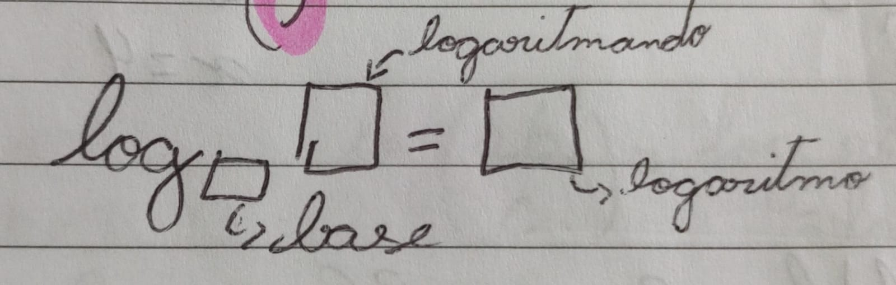Como Construir gráfico
1° Analisar o crescimento
| Base/Sinal | f(x)=logbx | f(x)=-logbx |
| b>1 | crescente | decrescente |
"0| Decrescente |
Crescente |
|
2° Analisar o domínio
O domínio define a "barreira" da função"
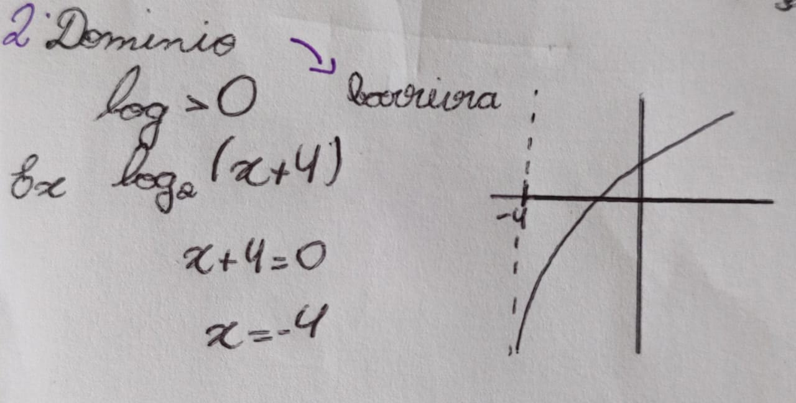
3° Cortes no eixo
X - f(x)=0
Y - x=0
4° E caso necessário achar mais pontos
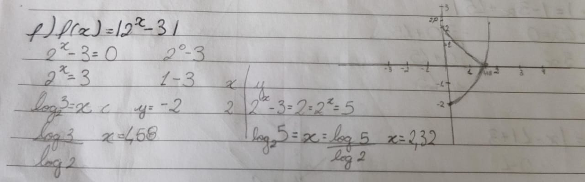
Função Modular
Módulo de um número
|+2| = 2
|−2| = 2
Quando temos x dentro do módulo:
| x| = 3 pode ser x=3 ou x=-3
equação modular
Ex.:
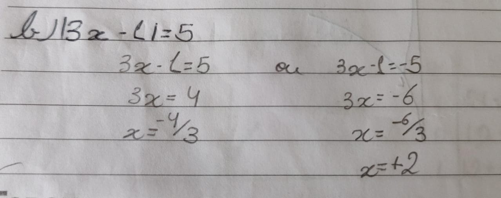Contrução de gráfico
1°Fazer pontos do módulo
2° Refletir a parte negativa que corta o eixo y
3°caso haja número fora do módulo mover conforme necessário
4°Se a função cruzar o eixo x em mais de um ponto, devemos igualar a 0 e encontrar as novas raízes
Ex.:
Progressão aritmétrica(PA)
Para sabermos a progressão aritmética somamos o termo inicial a1 pela (r) Razão
Para achar qualquer termo usamos:
An=Ak+(n+k)r
para achar a razão:
r=An-An-1
Ex.:
Qual é o 50° termo da PA?
Outro exemplo:
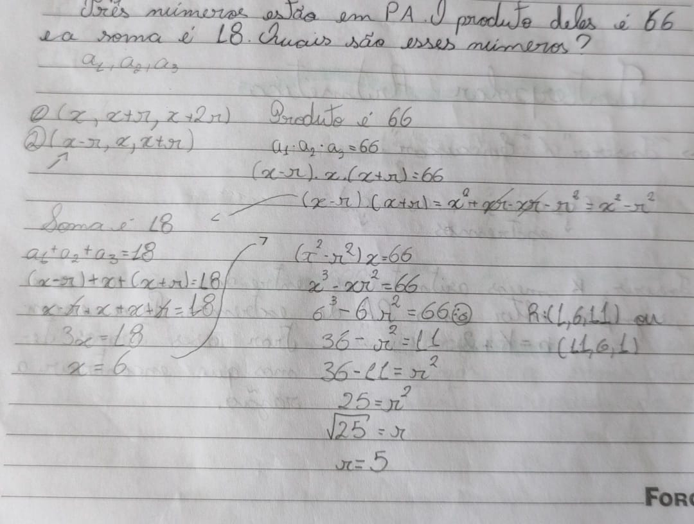Interpolar aritmétrica
Como inserir ou encaixar K meio aritméticos entre dois termos
n=k+2
Ex.:
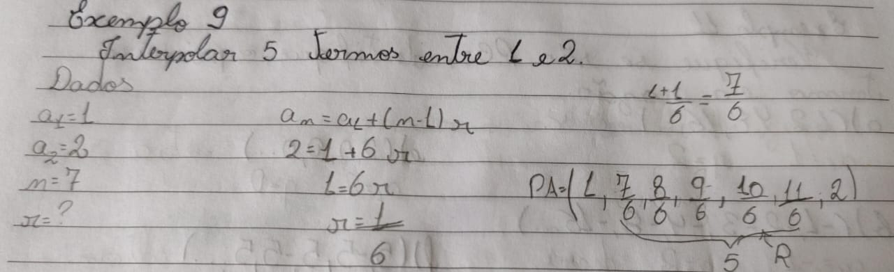Soma dos termos de uma PA finita
Para isso usamos:
Sn=(a1an)*r/2
PA dão funções afim
Exemplo de uma PA:
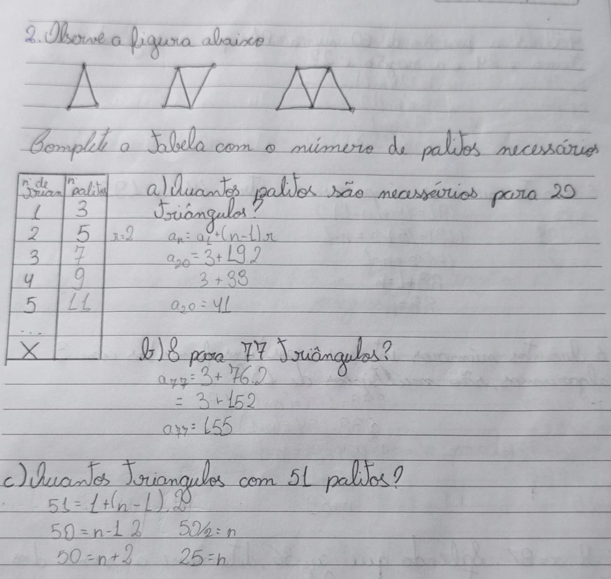Progressão geométrica(PG)
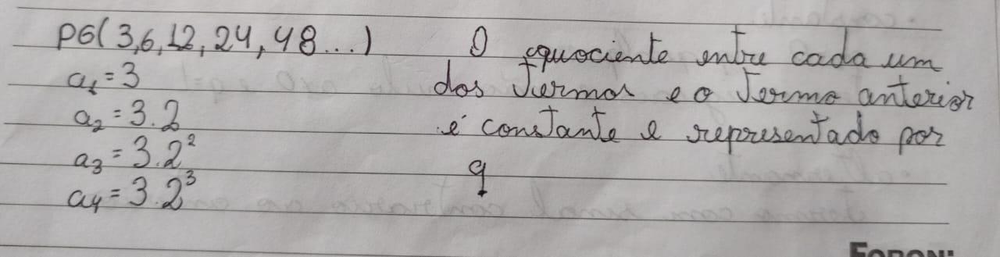
Classificação
- Crescente
com termo positivo q>1
com termo negativo 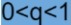
-
Decrescente
com termo positivo
com termo negativo q<1
-
Constante
A1=0 e q qualquer
-
Alternante
termo com sinal contrário ao anterior, ocorre quando q<0
-
Estacionária
Apenas o primeiro termo é diferente de zero
An=A1Q,n-1

Soma dos termos de uma PG finita
Sn=A1*(1-qn/1-q)
PG infinita
Só podemos estabelecer essa soma se a razão 0
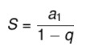
PG dão funções exponenciais
Ex.:
Matemática financeira
Na matemática financeira estudamos o valor do dinheiro ao longo do tempo, ou seja, é uma área
que consiste em cálculos que vão auxiliar no controle do dinheiro.
M=C+J
Elementos:
C- capital
n-Prazo
J-Juros(aluguel/desenvolvimento)
I- taxa de juros
M- montante
Existem dois regimes de capitalização

Juros simples
O juros composto tem seu valor calculado sobre o capital inicial.
Para entendermos a fórmula devemos saber que o J=C.i.n, então:
M=C(1+i.n)
Aqui podemos ver um exemplo para entender melhor:
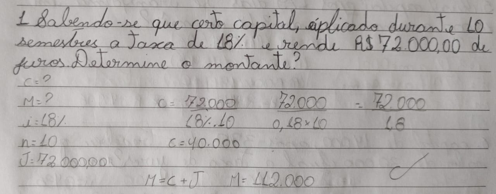O juros simples pode nos fornecer uma função afim onde,n é a variavel independente(x)
e M é a váriavel dependente(y)
Ex.:
Juros composto
Nos juros compostos o valor calculado é em cima do capital do prazo anterior, ou seja, dia,mês,ano... anterior
M=C(1+I)N
Ex.:
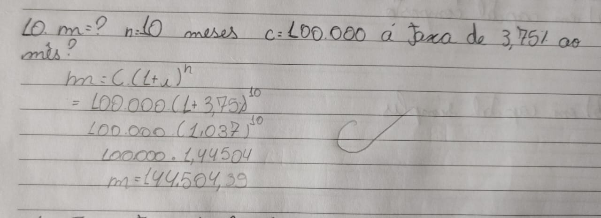Autoavaliação
Em minha percepção pude perceber que no 1° trimestre tive um bom rendimento na matéria, no 2° trimestre meu rendimento começou
a decair, e no 3° trimestre pude perceber que meu rendimento decaiu bastante, acredito que parte disso aconteceu por que
percebi que em outras matérias eu estava com um rendimento pior e precisava focar mais nessas matérias, oque acabou afetando
meus resultados na matéria de matématica.Acreditei que estava entendendo bem a matéria deste trimestre porém quando fiz a prova
percebi que meus resultados não foram como esperto, e com isso pude concluir que a elaborção do resumo usado em prova contruibui
grandemente meus estudos, pois além de conseguir organizar minhas ideias eu também consigo assistir vídeos aulas de outros professores
que muitas vezes explicam o contéudo de outra forma.
Também pude perceber que o contéudo foi passado mais rápido ao longo desse trimestre e do trimestre anterior, compreendo que isso
ocorre devido a matriz curicular, entretanto, sinto que isso também acabou afetando meus estudos, já que sinto a necessidade de
escrever cada conteúdo, e passo a passo para os calculos.
Contudo, posso perceber que a professora faz o máximo possível para que todos os alunos compreendam a matéria.
Em relação a cado contéudo pude perceber que tive certa facilidade com PA e a matématica financeira(apesar de achar juros
compostos um pouco difícil) e função modular, porém Função logaritmica e PG foram as minhas maiores dificuldades.
Concluindo, espero que ano que vem eu consiga manter meu rendimento, prentendo alterar algumas formas de estudo, e também me organizar melhor
para não deixar acumular para a véspera das provas.
-
Aqui estão as referência usadas:
Referências
Ir para o início da página
Voltar para a primeira página